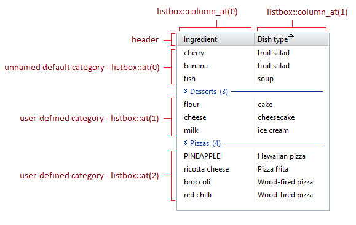

Class nana::listbox
The nana::listbox class provides the functionality of a list box widget that organizes textual data into rows (referred to as "items") and columns. The columns are defined by the listbox header, and are optionally sortable. Rows can be grouped in user-defined categories, otherwise they are placed in a default category.
The widget is implemented as a container of categories, which in turn are containers of items. This means that an item is addressed using two "coordinates": a position in the listbox's index of categories, and a position in a category's index of items (the data type index_pair is used for this purpose).
The intersection of a column and a row/item is called a cell. By default, the text that is displayed in each cell must be explicitly set by the user, but the listbox also has a mode whereby it displays the contents of an STL sequence container (see this article for details).
Member types
| Type | Description |
|---|---|
| index_pair | a category position and an item position, acts as an "address" for individual listbox items |
| index_pairs |
a set of index_pair, a standard container, possibly
std::vector<index_pair>
|
| size_type | an integral type, currently equivalent to std::size_t (as of Nana v1.7) |
| cat_proxy | category iterator and manipulator |
| item_proxy | item iterator and manipulator |
| iresolver | the input resolver that converts an object to an item |
| oresolver | the output resolver that converts an item to an object |
| export_options | the options of exporting items into a string variable |
| column_interface | column operations |
Scheme
| Property | Description |
|---|---|
| header_bgcolor | background color of header columns |
| header_fgcolor | foreground color of header columns |
| header_grabbed | background color of grabbed header column |
| header_floated | background of header column when it is grabbed and moved |
| item_selected | background color of item when it is selected |
| item_highlighted | background color of item when it is highlighted |
| selection_box | the color of selection box |
| max_fit_content | the max column width which is generated by fit_content is allowed, in pixels. It is ignored when it is 0, or a non-zero value is passed to fit_content() |
| min_column_width | the minimum width of column, excluding the suspension_width |
| text_margin | left/right margin to the text to determine the cell width. Width of cell = text_margin * 2 + text width + 1 |
| header_height | height of header, in pixels |
| text_height (deprecated) | text height of item, in pixels. It will be set by the listbox with current font |
| item_height_ex | extra height of item, in pixels |
| item_height | the minimum width of column, excluding the suspension_width |
| header_splitter_area_before | response area before header splitter |
| header_splitter_area_after | response area after header splitter |
| mouse_wheel | the number of lines/characters to scroll when vertical/horziontal mouse wheel is moved |
Events
In addition to the general events that most widgets have, the listbox also has the following:
| Event | Description |
|---|---|
| checked(const arg_listbox&) | occurs when an item is checked or unchecked |
| selected(const arg_listbox&) | occurs when an item is selected or unselected |
| category_dbl_click(const arg_listbox_category&) | occurs when a category is double clicked |
Member functions
| (constructors) | construct a nana::listbox instance |
|||||||||
(0) empty object constructor (default constructor)
Constructs an "empty" (1, 2) create constructors
Construct and initialize a Parameters
|
||||||||||
| Associative category access | ||||||||||
|---|---|---|---|---|---|---|---|---|---|---|
| assoc (Nana 1.4) | access specified category | |||||||||
This method returns the category that is mapped to the specified key; it inserts a new category if such key does not exist. Iterators are invalidated if an insertion is performed. Relevant article: Listbox Associative Category. Parameters
Return valueAn iterator to the category associated with the key. |
||||||||||
| assoc_at (Nana 1.4) | access specified category with bounds checking | |||||||||
Returns the category that is associated with the specified key. Bounds checking is performed, exception of type Parameters
Return valueAn iterator to the category associated with the key. Exception
|
||||||||||
| assoc_erase (Nana 1.4) | erases a category | |||||||||
Removes a category that is associated with the specified key. If the key does not exist, no category will be removed. Relevant article: Listbox Associative Category. Parameters
|
||||||||||
| assoc_ordered (Nana 1.4) | enables or disables the ordered insertion of categories | |||||||||
Enables or disables the ordered insertion of categories (does not affect the order of existing categories). Ordered insertion only works if all the keys associated with categories have the same type. Relevant article: Listbox Associative Category. Parameters
Return value
|
||||||||||
| Column access | ||||||||||
| column_at (Nana 1.5) | access a specified column with bounds-checking | |||||||||
Returns a reference to the column at the specified position. Bounds checking is performed. Parameters
Return valuea reference to the column at the requested position Exception
|
||||||||||
| column_from_pos | returns the position of column by a specified point | |||||||||
Returns the absolute position of the column which contains the specified point. Parameters
Return valueThe absolute position of the column (the position that the column had at creation), or |
||||||||||
| column_movable (Nana 1.7) | allows or disallows the repositioning of columns by the user | |||||||||
When columns are movable, the user can drag them into new positions (that is the default state).
Parameters
Return value(1) |
||||||||||
| column_resizable (Nana 1.7) | enables / disables the resizability of the column | |||||||||
When a column is not resizable, it doesn't show a west-east cursor when the user moves the cursor to the gap between two columns, and the column can't be resized by dragging the gap. Parameters
Return value
|
||||||||||
| column_size | returns the number of columns | |||||||||
Returns the number of columns that the listbox has. Return valueThe number of columns. |
||||||||||
| move_column (Nana 1.7) | moves a column to a new position | |||||||||
Moves a column to a new display position. If Parameters
|
||||||||||
| reorder_columns (Nana 1.7) | repositions columns according to a sort order | |||||||||
This function reorders the columns in the range [first_col, last_col], using a row. More specifically, it sorts the group of cells at the intersection of the column range and the row, and repositions the columns in accordance with the new order of the cells.
Repositioning the columns does not affect the order they have in the internal column container (which is the order they were added in). The columns are simply displayed in a new order, which creates the dichotomy between display positions and absolute positions. That is why listbox::column_at has the Parameters
|
||||||||||
| Element access | ||||||||||
| at | access an item or category with bounds checking | |||||||||
Returns an iterator to the content at specified location (0, 1) access a categoryParameter
Return valuean iterator to the requested category (2, 3) access an itemParameter
Return valuean iterator to the requested item |
||||||||||
| operator[] (Nana 1.4) | access an item or category without bounds checking | |||||||||
Returns an iterator to the content at specified location (0, 1) access a categoryParameter
Return valuean iterator to the requested category (2, 3) access an itemParameter
Return valuean iterator to the requested item |
||||||||||
| Observers | ||||||||||
| checked | returns the set of all checked items | |||||||||
Returns a sequence container with the locations of all checked items. A checked item is an item whose associated checkbox is checked (see listbox::checkable). Return valueAn std container that contains a set of |
||||||||||
| selected | returns the set of all selected items | |||||||||
Returns a sequence container with the locations of all selected items. Return valueAn std container that contains a set of |
||||||||||
| size_categ | returns the number of categories | |||||||||
This method returns the number of categories, which is always at least 1 due to the default category (which cannot be removed). Return valueThe number of categories, as an integral type. As of Nana v1.7, |
||||||||||
| size_item | returns the number of items in a category | |||||||||
This method returns the number of items contained by the specified category. Return valueThe number of items, as an integral type. As of Nana v1.7, |
||||||||||
| visible_header | determines the visibility of the listbox header | |||||||||
Determines the visibility of the listbox header. Return value
|
||||||||||
| Operations | ||||||||||
| append_header | appends a new column | |||||||||
Appends a new column at the end. Parameters
Return valuethe index of the new column |
||||||||||
| auto_draw | enables/disables automatic drawing | |||||||||
This function enables or disables automatic drawing. If auto drawing is disabled, the listbox no longer automatically redraws when its contents changes. This is useful to avoid inefficiency and save CPU time when performing many operations in a row, like when appending a large number of items, for example. In such a case, the listbox redrawing each time an item is appended is redundant and needlessly slows down operation. To prevent that, you would typically first disable auto drawing, then append the items, and finally re-enable auto drawing. Parameters
|
||||||||||
| avoid_drawing (Nana 1.4) | temporarily suspends automatic drawing and executes a function | |||||||||
This is a simple helper function that disables automatic drawing before calling a user function, and then re-enables automatic drawing when the user function returns. Implementation as of Nana v1.7: Parameters
|
||||||||||
| cast | returns the item or category that is being displayed at the specified pixel coordinates | |||||||||
This method tests whether the specified point falls within the draw area of an item or category currently being displayed in the listbox viewport. Parameters
Return valueAn The object is "empty" when both If the returned object represents an item, a display position is used to identify the item. See the "Remarks" section of listbox::sort_col for an explanation of the difference between a display postition and an absolute position. |
||||||||||
| category_icon (Nana 1.5.4) | modifies the category icon | |||||||||
Parameters
Return valueThe reference of |
||||||||||
| checkable | enables/disables a mode whereby each item (row) has a checkbox | |||||||||
This function enables or disables the "checkable" mode of the listbox. When this mode is enabled, each item displays a checkbox in the leftmost column, to the left of the cell text. Parameters
|
||||||||||
| enable_single / disable_single | enables/disables single selection/check | |||||||||
Sets whether the user can check or select multiple items at the same time. Parameters
|
||||||||||
| hovered (Nana 1.7) | returns the hovered item | |||||||||
Returns the position of the item that the mouse cursor is hovering over. If there is no such item, the function returns either an empty Parameters
Return valueAn Remarks
If the parameter Having the function return an end position can be useful if you're trying to insert items at the position of the hovered item (you might do that as part of a drag-drop operation using |
||||||||||
| is_single_enabled (Nana 1.7) | determines whether single selection/check is enabled | |||||||||
Determines whether single selection/check is enabled. Parameters
Return value
|
||||||||||
| move_select | moves the selection cursor to a position adjacent to its current one | |||||||||
This method moves the selection cursor one position upwards or downwards, depending on the argument passed to it. Parameters
|
||||||||||
| scroll (Nana 1.2) | scrolls the view to the bottom/top | |||||||||
Scrolls a category or an item into view, aligning it to the bottom/top. Parameters
|
||||||||||
| show_header | shows/hides the listbox header | |||||||||
Shows/hides the listbox column header. Parameters
|
||||||||||
| set_deselect (Nana 1.7.2) | sets a deselection predicate | |||||||||
Sets a predicate function that determines whether items should be deselected when In practice, this function is only called when multiple items are selected, and the user either clicks one of the selected items, or clicks on empty space. This is because when an unselected item is clicked, the selected items are deselected during the Parameters
ExampleThe following example shows how the predicate could be used to suppress the deselection of items when the user right-clicks on a selected item. This would be needed when implementing a pop-up menu for the listbox, with commands that target the selected items. |
||||||||||
| Modifiers | ||||||||||
| append | appends new categories to the listbox | |||||||||
Appends new categories to the listbox. Parameters
Return valuean iterator to the new category |
||||||||||
| clear | removes all the items from one or all categories | |||||||||
(0) clear a specific categoryRemoves all the items from the specified category (the category itself is not removed). (1) clear all categoriesRemoves all the items from all categories, including the default category. The categories themselves are not removed. Parameters
Exception
|
||||||||||
| erase | removes categories or items | |||||||||
Removes categories (including any contained items), or specific items. The default category (at index 0) is never removed, being cleared of items instead.
Parameters
Return value(3) returns an iterator to the item that follows the removed item Exception
|
||||||||||
| insert | inserts a new category at an arbitrary position | |||||||||
Inserts a new category before Parameters
Return valuea category iterator pointing to the newly inserted category Exception
|
||||||||||
| insert_item | inserts a new item, or a set of items | |||||||||
(0, 1) Inserts a new item before an absolute position. Parameters
Exception
|
||||||||||
| Ordering | ||||||||||
| sortable | enables/disables the sorting of items by a column | |||||||||
When a listbox is sortable, users can click a column header to sort the items by that column. Parameters
Return value(0) |
||||||||||
| freeze_sort | temporarily prevents automatic sorting | |||||||||
Sets a flag to prevent automatic sorting. Freezing the sorting before many insertion operations (for example) avoids redundant sorting for each insertion operation. Parameters
Return valuethe previous automatic sorting status ( |
||||||||||
| set_sort_compare | sets a strict weak ordering comparer for item sorting | |||||||||
Sets a custom strict weak ordering comparer function to be used when sorting the items by a specific column. Parameters
Examples of comparer functionsThis function compares items using the cell text: This function compares items using the custom data associated with them: |
||||||||||
| sort_col | sets the sort column, sorts all items, and enables automatic sorting | |||||||||
(0) Sorts all items by the specified column, and enables automatic sorting for subsequent item changes. Automatic sorting causes the items to be automatically re-sorted whenever there's a relevant change to the listbox contents. As a side-effect, this method potentially invalidates any stored display positions that were obtained before the items got sorted (see the "remarks" section below). Calling this method is equivalent to the user clicking on a column header when the listbox is sortable, except that the listbox window doesn't immediately redraw to reflect any changes (for that, you should call (1) Returns the current sort column. Parameters
Return value(1) The index of the current sort column, or RemarksIt is important to understand that a listbox category doesn't actually reorder its internal item container when the items are sorted. Instead, each category maintains an index of display positions for the sorted order. When sorting is enabled, the listbox simply displays the items in the sorted order, while continuing to address them using their absolute (unsorted) positions assigned to them at creation. This can result in a mismatch between the display position and the absolute position of an item, when the items are sorted. This is important, because all methods that take an |
||||||||||
| unsort | cancels automatic sorting | |||||||||
Cancels automatic sorting. As a side effect, this method potentially invalidates any stored display positions that were obtained when the items were sorted. A possible implementation: |
||||||||||
| Visible range | ||||||||||
| first_visible (Nana 1.7) | returns the first visible element | |||||||||
Returns the index of the first visible item or category. To test whether the returned Return valueThe display position of first visible element (for an explanation of the term "display position", see the "Remarks" section of listbox::sort_col). |
||||||||||
| last_visible (Nana 1.7) | returns the last visible element | |||||||||
Returns the index of the last visible item or category. To test whether the returned Return valuethe index of last visible element |
||||||||||
| visibles (Nana 1.7) | returns all visible items | |||||||||
Returns a set of all the items that are currently displayed in the listbox viewport. Return valuean |
Usage details and functionality
This section discusses usage details, and tries to explain the major features and functionality of the widget.
Adding items and accessing cells
As mentioned in the introduction to the class, the listbox widget is a container of categories, and each category is a container of items. Every item that is added to the listbox must belong to a category. If it's not desired to have any "visible" categories (which have a name and can be clicked on), then the items must be added to the default category, which has the position 0 in the category index.
But before any items can be added, first a column must be added to the listbox:
list_box.append_header("Column 0");The listbox is created without columns, and will throw an std::out_of_range exception if items are added without a column present.
In order to add an item to a category, a cat_proxy category iterator must be obtained:
nana::listbox::cat_proxy cat0 {list_box.at(0)}; // get iterator pointing to category 0Then, cat_proxy::append can be used to add a new item to the category:
cat0.append("cell 0 of item 0");For the sake of clarity, the code above stores the category iterator into a variable before using it. If a variable is not necessary, the code can be contracted into one line :
list_box.at(0).append("cell 0 of item 0"); // append new item to category 0The code discussed so far produces a listbox with one item (row), which has one cell. In order to read the text in that cell, first an item iterator must be obtained by calling cat_proxy::at:
nana::listbox::item_proxy ip {list_box.at(0).at(0)}; // get iterator pointing to item 0 of category 0Then, the cell text can be obtained by calling item_proxy::text:
std::cout << ip.text(0) << std::endl; // get the text of cell 0The two lines above can be contracted into one:
// get the text from (category 0)->(item 0)->(cell 0)
std::cout << list_box.at(0).at(0).text(0) << std::endl;Of course, a listbox can have more than one column, and consequently items can have more than one cell. When an item with multiple cells is added, an initializer list can be used to pass the cell strings to cat_proxy::append:
list_box.append_header("Column 1");
list_box.at(0).append({"cell 0 of item 1", "cell 1 of item 1"});The code so far has added two columns, but the first item that was added earlier still only has text for its first cell. If an attempt is made to retrieve the text of its second cell, an std::out_of_range exception will be thrown (internally, the item is missing the second cell entirely). The missing text should be set:
list_box.at(0).at(0).text(1, "cell 1 of item 0");Adding a second column didn't automatically add a second cell to the first item. Attempting to set the text for the second second cell forced the library to create the cell.
The item_proxy class has member functions that let the user change most item properties. The code above set the text of a cell, but it's also possible to set the background color of an item, for example.
// change the background color of the second item
list_box.at(0).at(1).bgcolor(nana::colors::light_salmon);Changing the colors of a single cell rather than the whole item is a bit more complicated, but possible:
// change the bg color of the second cell of the first item
nana::color cellbg {"#bbeebb"}; // green bg color
nana::color cellfg {list_box.at(0).at(0).fgcolor()}; // keep the same foreground
std::string cellstr {list_box.at(0).at(0).text(1)}; // copy the existing text
nana::listbox::cell cell {cellstr, {cellbg, cellfg}}; // construct a new cell
list_box.at(0).at(0).text(1, cell); // set the new cell using item_proxy::textFinally, here are the code fragments that were discussed above, coalesced into a compilable example:
#include <nana/gui.hpp>
#include <nana/gui/widgets/listbox.hpp>
#include <iostream>
int main()
{
nana::form fm;
fm.div("vert margin=15 <lb>");
nana::listbox list_box {fm};
fm["lb"] << list_box;
list_box.append_header("Column 0");
list_box.at(0).append("cell 0 of item 0"); // append new item to category 0
// get the text from (category 0)->(item 0)->(cell 0)
std::cout << list_box.at(0).at(0).text(0) << std::endl;
list_box.append_header("Column 1");
list_box.at(0).append({"cell 0 of item 1", "cell 1 of item 1"});
list_box.at(0).at(0).text(1, "cell 1 of item 0");
// change the background color of the second item
list_box.at(0).at(1).bgcolor(nana::colors::light_salmon);
// change the bg color of the second cell of the first item
nana::color cellbg {"#bbeebb"}; // green bg color
nana::color cellfg {list_box.at(0).at(0).fgcolor()}; // keep the same foreground
std::string cellstr {list_box.at(0).at(0).text(1)}; // copy the existing text
nana::listbox::cell cell {cellstr, {cellbg, cellfg}}; // construct a new cell
list_box.at(0).at(0).text(1, cell); // set the new cell using item_proxy::text
fm.collocate();
fm.show();
nana::exec();
}Accessing the selected items
The previous section showed how to access arbitrary items, but what about accessing the set of currently selected items? The listbox makes that very easy, by providing the selected method. This method returns a sequence container with the "addresses" of all selected items.
Such an "address" is an index_pair object, which represents a pair of positions that locates the item (a position in the listbox's index of categories, and a position in a category's index of items). An index_pair object can be passed to listbox::at to access the item it identifies.
Since listbox::selected returns a sequence container, it's very easy to iterate through it using a range-based for loop. This is illustrated in the following example, which changes the color of all selected items when a button is pressed:
#include <nana/gui.hpp>
#include <nana/gui/widgets/button.hpp>
#include <nana/gui/widgets/listbox.hpp>
#include <random>
int main()
{
nana::form fm {nana::API::make_center(300, 420)};
fm.div("vert margin=15 <listbox><weight=15><button weight=30>");
nana::listbox list_box {fm};
fm["listbox"] << list_box;
// add two columns and three categories
list_box.append_header("column zero");
list_box.append_header("column one");
list_box.append({"category one", "category two", "category three"});
// add three items to each category
for(unsigned cat_count = 0; cat_count < list_box.size_categ(); cat_count++)
{
for(unsigned item_count = 0; item_count < 3; item_count++)
{
auto str {"item " + std::to_string(item_count)};
list_box.at(cat_count).append({str + " cell zero", str + " cell one"});
}
}
nana::button btn {fm, "Change the color of selected items"};
fm["button"] << btn;
btn.events().click([&]
{
// generate a random color to apply to each selected item
std::mt19937 eng {std::random_device {}()};
std::uniform_int_distribution<unsigned> distr {0, 0xffffff};
nana::color_rgb clr {distr(eng)};
// iterate though all selected items using a range-based for loop
for(const auto &cat_item : list_box.selected()) // `cat_item` is of type listbox::index_pair
list_box.at(cat_item).fgcolor(clr); // change the color of each selected item
});
fm.collocate();
fm.show();
nana::exec();
}